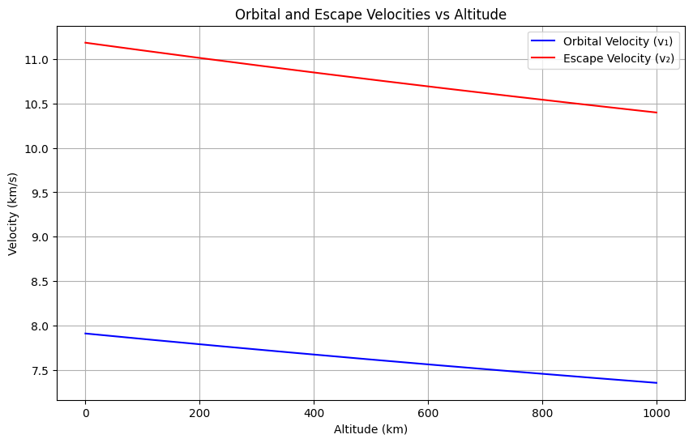
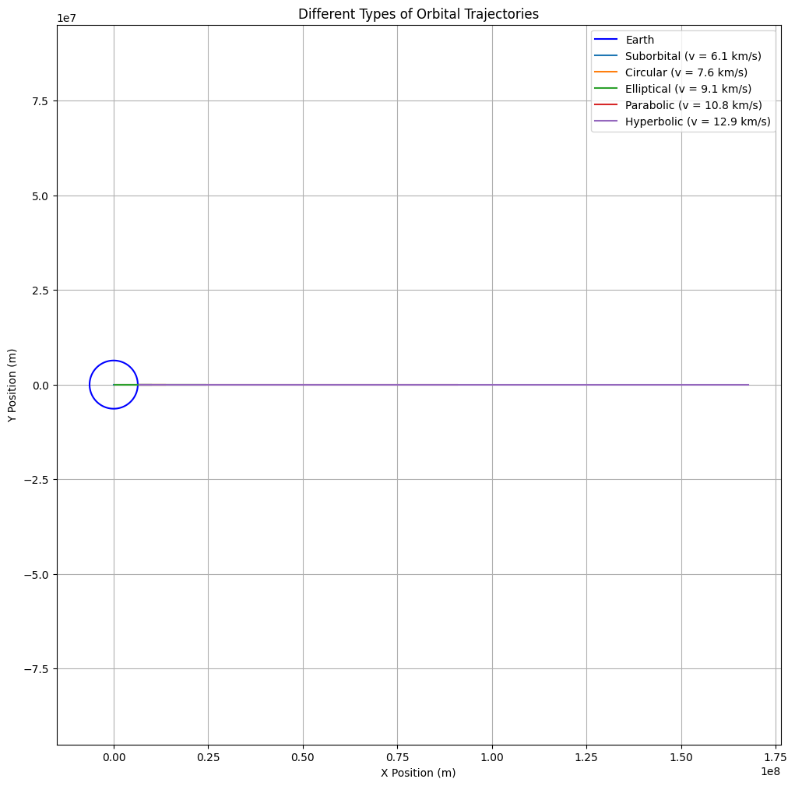
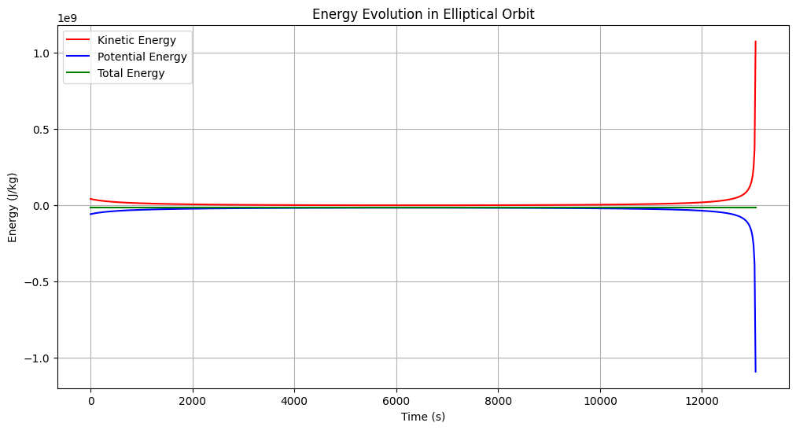

Problem 3
Trajectories of a Freely Released Payload Near Earth
1. Theoretical Foundation
Types of Possible Trajectories
The trajectory of a payload released near Earth depends on its initial velocity \( v \) relative to Earth's gravitational pull. The possible trajectories are determined by comparing the payload's velocity to key orbital velocities:
-
First Cosmic Velocity (Circular Orbital Velocity): $$ v_1 = \sqrt{\frac{GM}{r}} $$
-
Second Cosmic Velocity (Escape Velocity): $$ v_2 = \sqrt{\frac{2GM}{r}} = \sqrt{2}v_1 $$
where: - \( G \) is the gravitational constant - \( M \) is Earth's mass - \( r \) is the distance from Earth's center
Let's visualize these velocities as a function of altitude:
import numpy as np
import matplotlib.pyplot as plt
# Constants
G = 6.67430e-11 # Gravitational constant (m^3/kg/s^2)
M = 5.972e24 # Earth mass (kg)
R = 6.371e6 # Earth radius (m)
# Calculate velocities at different altitudes
altitudes = np.linspace(0, 1000000, 1000) # Altitudes from 0 to 1000 km
r = R + altitudes
v1 = np.sqrt(G * M / r)
v2 = np.sqrt(2 * G * M / r)
plt.figure(figsize=(10, 6))
plt.plot(altitudes/1000, v1/1000, 'b-', label='Orbital Velocity (v₁)')
plt.plot(altitudes/1000, v2/1000, 'r-', label='Escape Velocity (v₂)')
plt.xlabel('Altitude (km)')
plt.ylabel('Velocity (km/s)')
plt.title('Orbital and Escape Velocities vs Altitude')
plt.grid(True)
plt.legend()
plt.show()

Trajectory Classification
The payload's path depends on its velocity relative to these thresholds:
- Suborbital (v < v₁):
- Follows a parabolic trajectory
- Returns to Earth
-
Energy equation: \( E = \frac{1}{2}mv^2 - \frac{GMm}{r} < 0 \)
-
Circular Orbit (v = v₁):
- Maintains constant altitude
-
Energy equation: \( E = -\frac{GMm}{2r} \)
-
Elliptical Orbit (v₁ < v < v₂):
- Closed orbit with varying altitude
-
Energy equation: \( -\frac{GMm}{2r} < E < 0 \)
-
Parabolic Escape (v = v₂):
- Escape trajectory with zero excess velocity
-
Energy equation: \( E = 0 \)
-
Hyperbolic Escape (v > v₂):
- Escape trajectory with excess velocity
- Energy equation: \( E > 0 \)
2. Mathematical Analysis
Equations of Motion
The motion is governed by Newton's Second Law and Universal Gravitation:
In Cartesian coordinates: $$ \ddot{x} = -\frac{GMx}{(x^2 + y^2)^{3/2}} $$ $$ \ddot{y} = -\frac{GMy}{(x^2 + y^2)^{3/2}} $$
Conservation Laws
-
Angular Momentum: $$ L = mr^2\dot{\theta} = \text{constant} $$
-
Energy: $$ E = \frac{1}{2}mv^2 - \frac{GMm}{r} = \text{constant} $$
3. Computational Analysis
Let's simulate different trajectory types:
import numpy as np
from scipy.integrate import solve_ivp
import matplotlib.pyplot as plt
def equations(t, state):
x, vx, y, vy = state
r = np.sqrt(x**2 + y**2)
ax = -G * M * x / r**3
ay = -G * M * y / r**3
return [vx, ax, vy, ay]
def simulate_trajectory(v0, angle_deg, altitude=500000):
# Initial conditions
x0 = R + altitude
y0 = 0
angle_rad = np.radians(angle_deg)
vx0 = v0 * np.cos(angle_rad)
vy0 = v0 * np.sin(angle_rad)
# Time span
t_span = (0, 20000)
t_eval = np.linspace(0, 20000, 1000)
# Solve ODE
sol = solve_ivp(equations, t_span, [x0, vx0, y0, vy0],
t_eval=t_eval, method='RK45')
return sol.y[0], sol.y[2]
# Plot different trajectories
plt.figure(figsize=(12, 12))
# Calculate v1 at release altitude
altitude = 500000
r = R + altitude
v1 = np.sqrt(G * M / r)
v2 = np.sqrt(2 * G * M / r)
velocities = [0.8*v1, v1, 1.2*v1, v2, 1.2*v2]
labels = ['Suborbital', 'Circular', 'Elliptical',
'Parabolic', 'Hyperbolic']
angles = [0, 0, 0, 0, 0]
# Plot Earth
theta = np.linspace(0, 2*np.pi, 100)
earth_x = R * np.cos(theta)
earth_y = R * np.sin(theta)
plt.plot(earth_x, earth_y, 'b-', label='Earth')
# Plot trajectories
for v, label, angle in zip(velocities, labels, angles):
x, y = simulate_trajectory(v, angle)
plt.plot(x, y, label=f'{label} (v = {v/1000:.1f} km/s)')
plt.axis('equal')
plt.grid(True)
plt.legend()
plt.title('Different Types of Orbital Trajectories')
plt.xlabel('X Position (m)')
plt.ylabel('Y Position (m)')
plt.show()

4. Energy Analysis
Let's analyze the energy distribution for different trajectories:
def calculate_energy(x, y, vx, vy):
r = np.sqrt(x**2 + y**2)
v = np.sqrt(vx**2 + vy**2)
KE = 0.5 * v**2
PE = -G * M / r
return KE, PE, KE + PE
# Plot energy evolution
plt.figure(figsize=(12, 6))
# Choose one trajectory (elliptical)
v0 = 1.2 * v1
t_span = (0, 20000)
t_eval = np.linspace(0, 20000, 1000)
# Solve ODE with same time points as t_eval
sol = solve_ivp(equations, t_span, [R + altitude, v0, 0, 0],
t_eval=t_eval, method='RK45', rtol=1e-8, atol=1e-8)
# Calculate energies
KE, PE, E = calculate_energy(sol.y[0], sol.y[2], sol.y[1], sol.y[3])
# Now plot using sol.t instead of t_eval to ensure matching dimensions
plt.plot(sol.t, KE, 'r-', label='Kinetic Energy')
plt.plot(sol.t, PE, 'b-', label='Potential Energy')
plt.plot(sol.t, E, 'g-', label='Total Energy')
plt.xlabel('Time (s)')
plt.ylabel('Energy (J/kg)')
plt.title('Energy Evolution in Elliptical Orbit')
plt.grid(True)
plt.legend()
plt.show()

5. Practical Applications
1. Satellite Deployment
- Precise velocity control for desired orbit
- Minimizing orbital corrections
- Station-keeping requirements
2. Reentry Scenarios
- Controlled deorbiting
- Heat shield requirements
- Landing point prediction
3. Interplanetary Missions
- Escape trajectory design
- Gravity assist maneuvers
- Delta-v budgeting
6. Conclusion
Understanding orbital trajectories is fundamental for: - Mission planning and execution - Risk assessment and mitigation - Optimal resource utilization - Safety of space operations
The analysis demonstrates how initial conditions determine the final trajectory, emphasizing the importance of precise calculations in space missions.